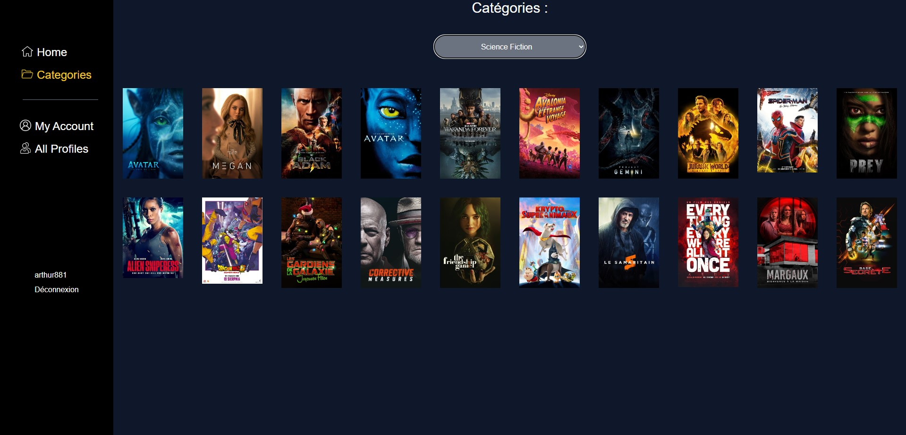
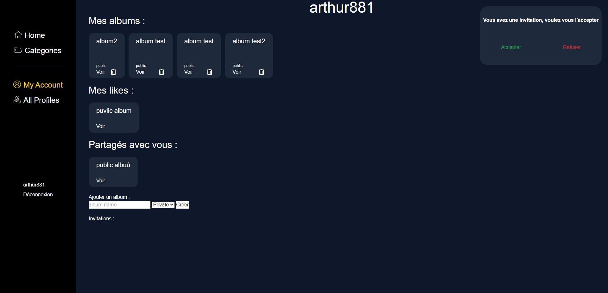
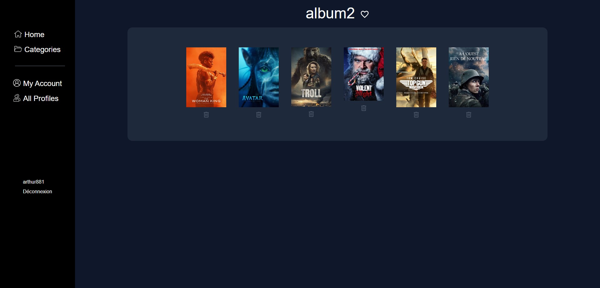
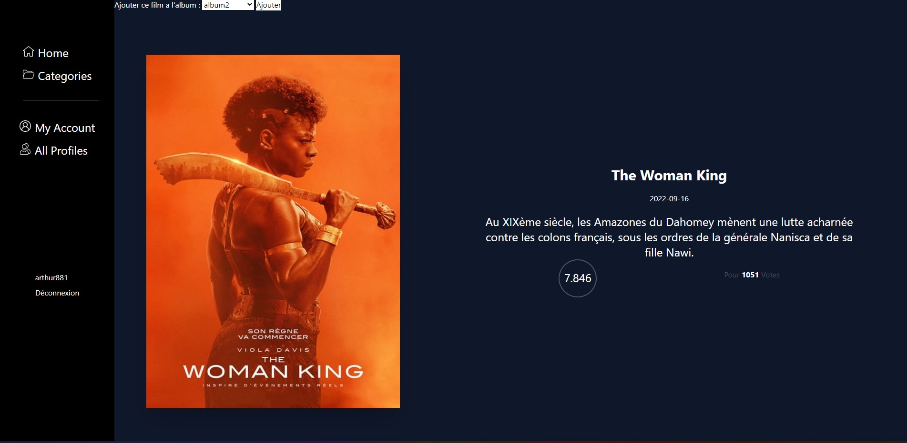
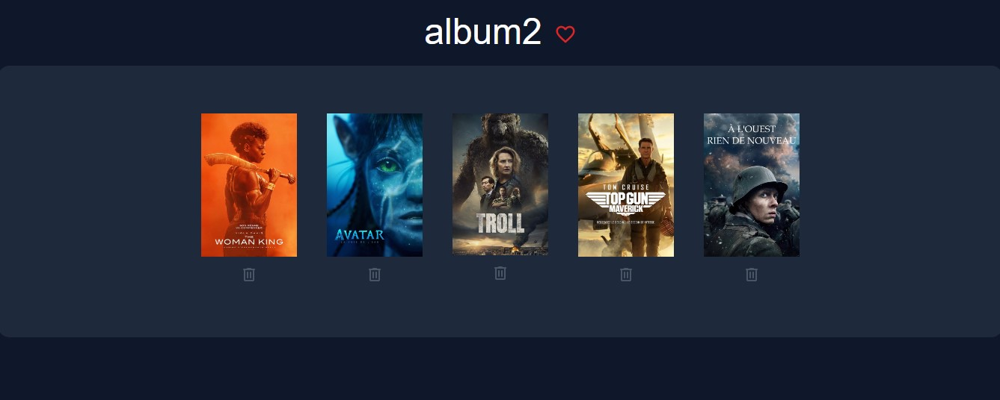
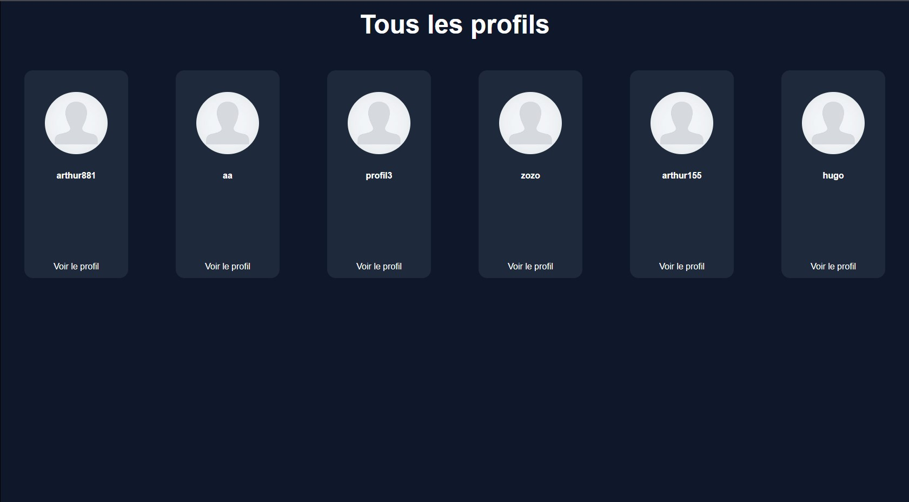
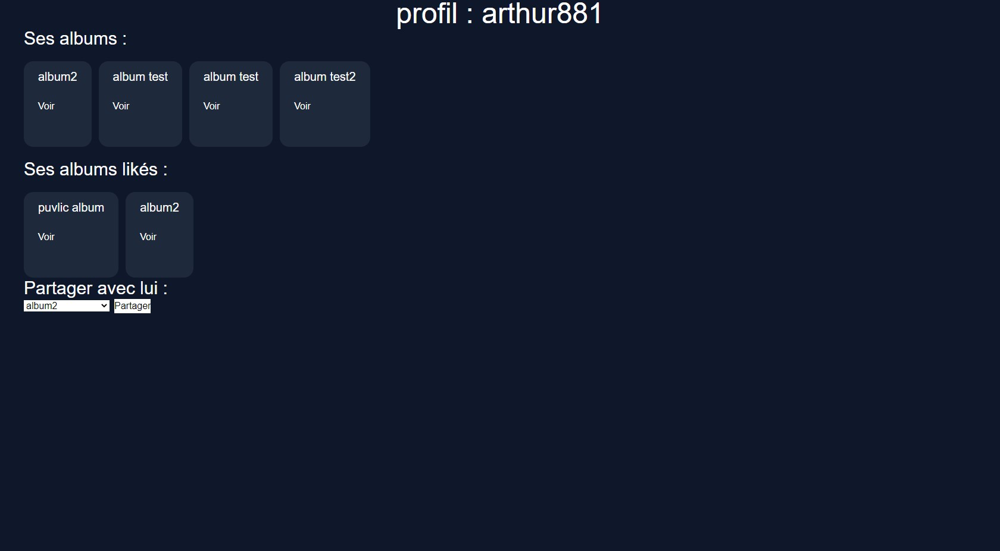

This website is a movie wiki based on The movie db API, this is the first time i use an API. An also for the first time I wans't alone on this project I worked with my friend and coworker Hugo.




Context :
This project was my first touch with an API, using javascript fectch method to get all the data from TMDB API and php-OOP to create all the login system and the album and like system as well. The purpose of this website is to create album and save movies in it, you have access to a large collection of movies thank's to the API. You can also share albums with your friends and like the one you like.



A social website
A backend project
As sayed before, this project was my first experience in a backend project, the goal of this website was not to be beautiful in the first place. It must worked ! and it does ! We used tailwind CSS to make it less ugly, and we are still updating it ! So it may change since the last time you came :)